바이브 코딩 대신 스펙
강의는 Andrew Ng의 소개로 시작해요. 그는 스펙 주도 개발을 "코드를 직접 쓰는 대신, 에이전트가 아직 모르는 맥락을 적어 주는 일"로 정리해요. 에이전트가 20~30분씩 혼자 코드를 짠다면 그건 사람 개발자의 몇 시간 분량이에요. 그러니 3~4분 들여 지시를 분명하게 적는 편이 낫다는 거예요.
강사인 JetBrains의 Paul Everitt는 먼저 바이브 코딩과 비교해요. 슬라이드 왼쪽 터미널에 "Not so big!!!"이라고 적혀 있고, 오른쪽에 커다란 초록 버튼이 있어요. "버튼 만들어 줘"라고만 시키면 이렇게 비슷하지만 어딘가 어긋난 결과가 나오고, 고쳐 달라는 대화가 끝없이 이어져요.
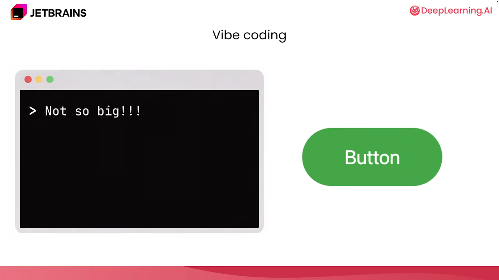
강의는 이 방식이 일회용 코드와 쌓이는 기술 부채로 이어진다고 봐요. 대안은 무엇과 왜를 적은 스펙을 어떻게(구현)와 떼어 두는 거예요. 아래 슬라이드가 그 전환을 보여 줘요. 왼쪽 말풍선에는 "고객용 웹앱", "TypeScript?", "색은?" 같은 흐릿한 의도가 떠 있어요. 오른쪽 터미널에는 그것이 대상 사용자, 기술 스택, Phase 1의 테이블 두 개(users, appointments)로 정리돼 있어요.
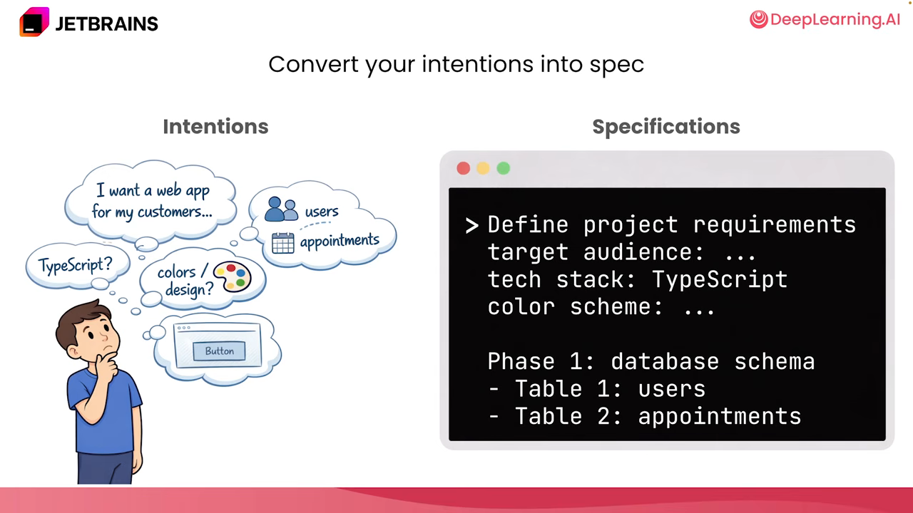
스펙을 쓰면 좋은 점은 세 가지예요. 슬라이드의 세 카드가 순서대로 그 내용이에요.
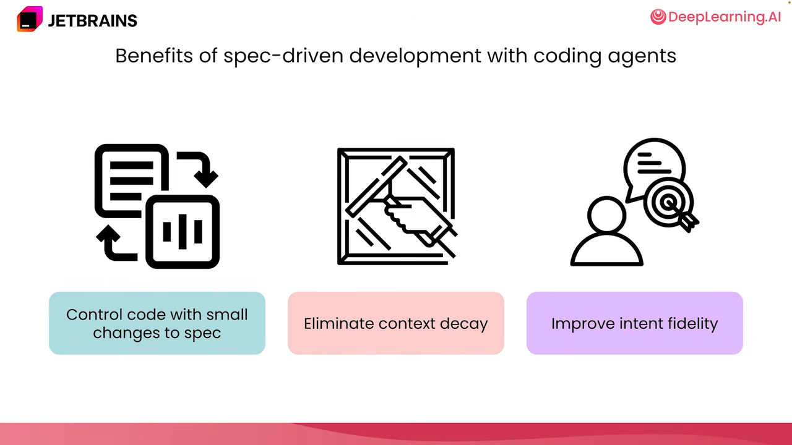
| 이점 | 영상이 든 예 |
|---|---|
| 작은 스펙 변경으로 큰 코드 변경을 다뤄요 | "SQLite와 Prisma를 쓴다" 한 줄이 코드 수백 줄을 바꿔요. MongoDB로 바꾸면 그만큼 또 바뀌어요. 앱의 느낌을 적은 몇 문장은 CSS(Cascading Style Sheets) 수백 줄이 돼요 |
| 컨텍스트 감쇠를 막아요 | 에이전트는 상태가 없어서, 컨텍스트 창이 차면 실수가 늘어요. 스펙은 세션과 에이전트를 넘어 남아요 |
| 의도 충실도가 올라가요 | 문제, 성공 기준, 제약, 사용자 흐름을 코드 생성 전에 적게 돼요 |
Andrew Ng은 짧은 프롬프트로 될 일이면 그걸로 충분하다고 해요. 다만 그가 아는 뛰어난 개발자들은 복잡한 프로젝트에서는 거의 언제나 자세한 스펙을 쓴다고 해요. 그들에게는 모델에게 없는 맥락과 '어떻게 만들지'에 대한 의견이 있기 때문이에요.
Specs are a key differentiator between vibe coding some slop and engineering a viable software product.
스펙이 엉성한 바이브 코딩과 쓸 만한 소프트웨어 엔지니어링을 가르는 핵심 차이예요.
— 영상 06:45
워크플로 한눈에 보기
스펙 주도 개발은 챗봇이 아니라 코딩 에이전트와 함께 써요. 챗봇은 코드에 대해 말할 수는 있어도 프로젝트 코드나 설치된 도구에 접근하지 못해요. 에이전트는 계획을 세우고, 코드베이스와 개발 도구를 직접 다뤄요. 강의는 에이전트를 유능한 페어 프로그래머로, 사람을 설계도를 주는 시니어 아키텍트로 봐요.
The agent is the muscle, but the spec is the brain.
에이전트는 근육이고, 스펙은 뇌예요.
— 영상 08:26
스펙은 두 층으로 나뉘어요. 위 칸이 프로젝트 수준, 아래 칸이 기능 수준이에요. 오른쪽 체크리스트가 '알맞은 디테일'의 기준이에요. 목표, 미션, 대상 사용자, 제약에는 체크가 있고, 맨 아래 저수준 결정에만 빨간 X가 있어요.
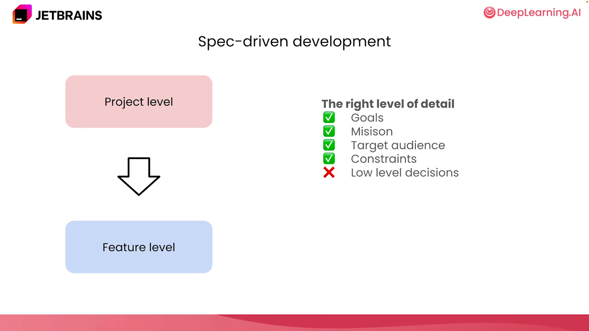
프로젝트 수준 문서는 헌법이라고 불러요. 미션(왜, 비전, 대상, 범위), 기술 스택(개발·배포 기술과 제약), 로드맵(단계별 작업 순서) 세 가지로 이뤄져요. AGENTS.md를 같은 목적으로 쓰는 개발자도 많지만, 헌법은 특정 에이전트에 묶이지 않고 더 구조적이라는 게 강의의 설명이에요. 헌법은 사람과 에이전트 사이의 합의이면서, 사람들 사이의 합의이기도 해요.
전체 흐름은 아래 슬라이드 한 장에 담겨 있어요. 왼쪽 위 Constitution에서 시작해 시간축을 따라가요. 아래에는 Feature phase 1, 2가 있고, 각각 Specification → Implementation → Validation 세 단계예요. 기능 사이마다 Replanning이 끼어 있어요.
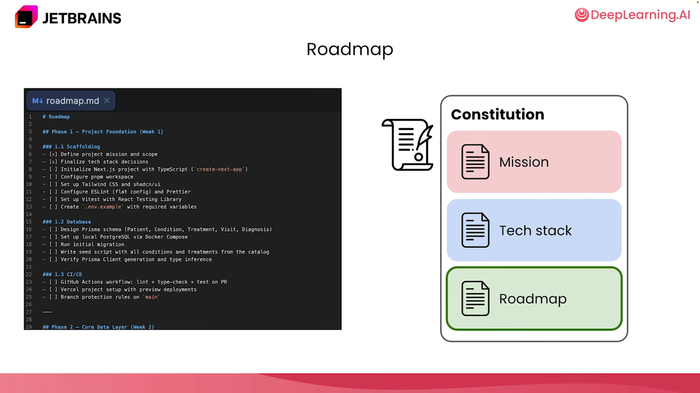
사람의 역할은 건축가에 비유돼요. 왼쪽 'You' 아래 설계도와 함께 Design, Supervise, Review, Accept, 그리고 '…또는 변경 요청'이 적혀 있어요. 오른쪽은 공사 현장의 Builders(그리고 에이전트)예요. 시공자에게 일하는 방법을 가르치지 말고, 그들이 모르는 맥락을 주라는 뜻이에요.
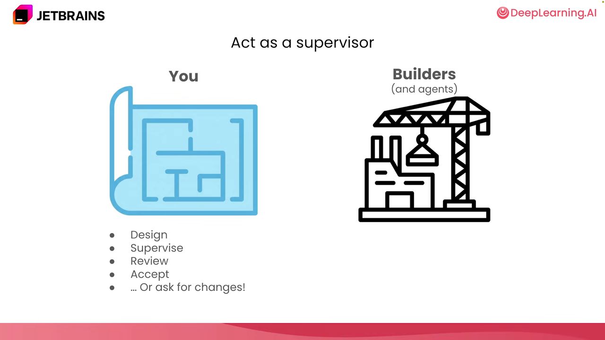
준비와 헌법 만들기
스펙 주도 개발은 특정 IDE(Integrated Development Environment)나 에이전트에 묶인 방법이 아니에요. 슬라이드 왼쪽 IDE 칸과 오른쪽 Agent 칸에 로고 몇 개와 물음표가 함께 있어요. 쓰던 도구를 그대로 써도 된다는 뜻이에요. 강의는 웹 앱을 만들 계획이라 WebStorm과 Claude Code를 써요.
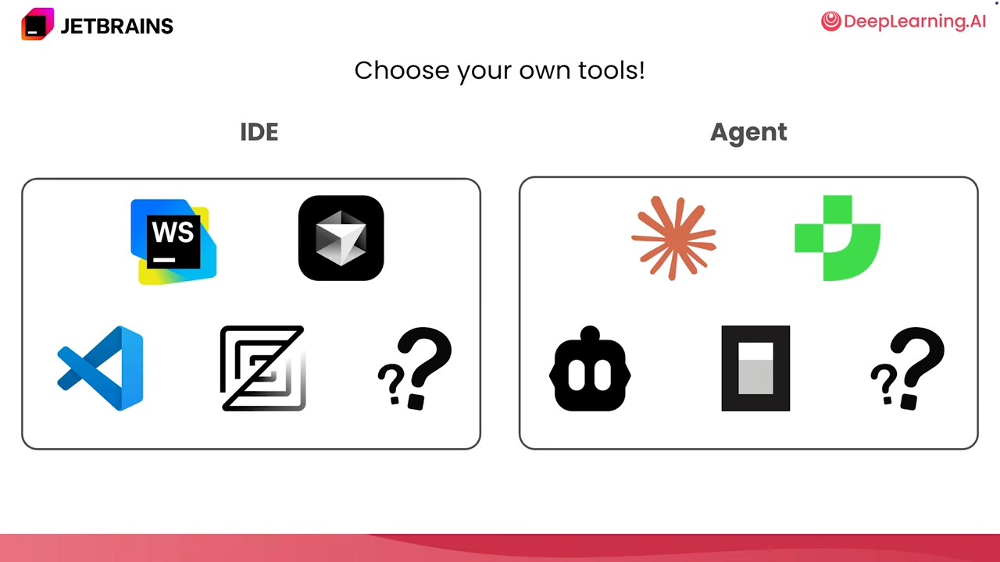
새 TypeScript 프로젝트를 Git 저장소와 함께 만들어요. 코드와 스펙의 버전을 꼼꼼히 남기려는 거예요. 에이전트가 명령을 실행할 때마다 확인을 묻는데, 무엇을 허락하는지 잘 보라고 해요. 코드의 최종 책임은 사람에게 있어요.
헌법의 세 기둥
이제 프로젝트를 에이전트에게 알려 줄 차례예요. 슬라이드의 Constitution 상자에 Mission, Tech stack, Roadmap이 있고, 오른쪽에 각각이 답하는 질문이 있어요. 핵심 아이디어가 무엇인지, 회사의 기술 스택과 어떻게 맞는지, 어떤 기능이 계획돼 있는지예요.
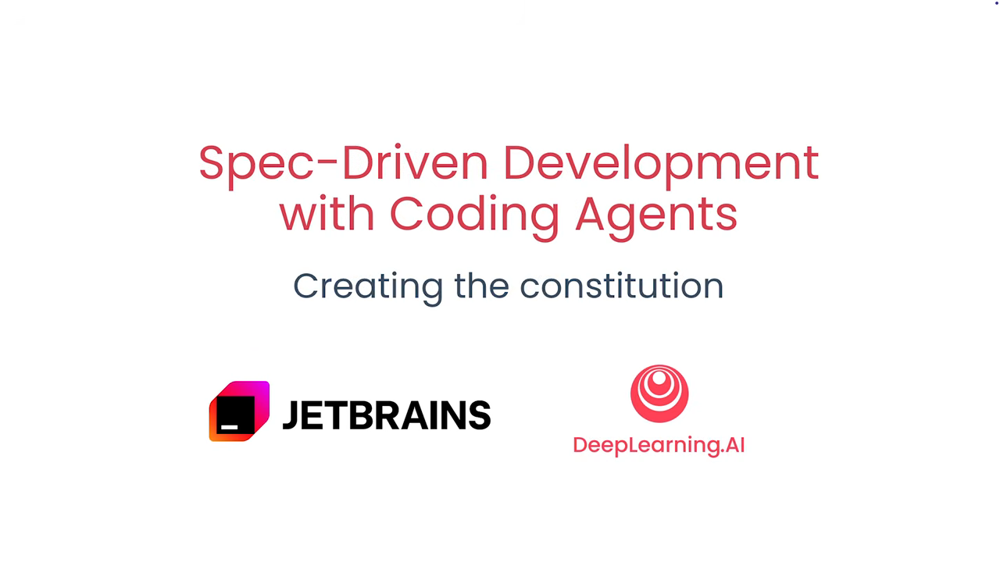
헌법은 혼자 쓰지 않고 에이전트와 대화하며 써요. 에이전트가 생각지 못한 아키텍처 패턴, 이미 그 일을 해 주는 외부 패키지, 속도와 데이터 정확성 같은 트레이드오프를 물어 오기 때문이에요.
예제 앱 Agent Clinic
예제는 Agent Clinic이에요. 유명한 학습용 프로젝트 Pet Clinic을 비튼 것으로, 환각과 컨텍스트 부패에 지친 AI 에이전트가 치료받으러 오는 병원이에요. 슬라이드 속 화면에 Ailments(증상) 목록이 표로 보여요. 앱은 예약, 증상, 치료(예: 컨텍스트 주입)를 관리해요.
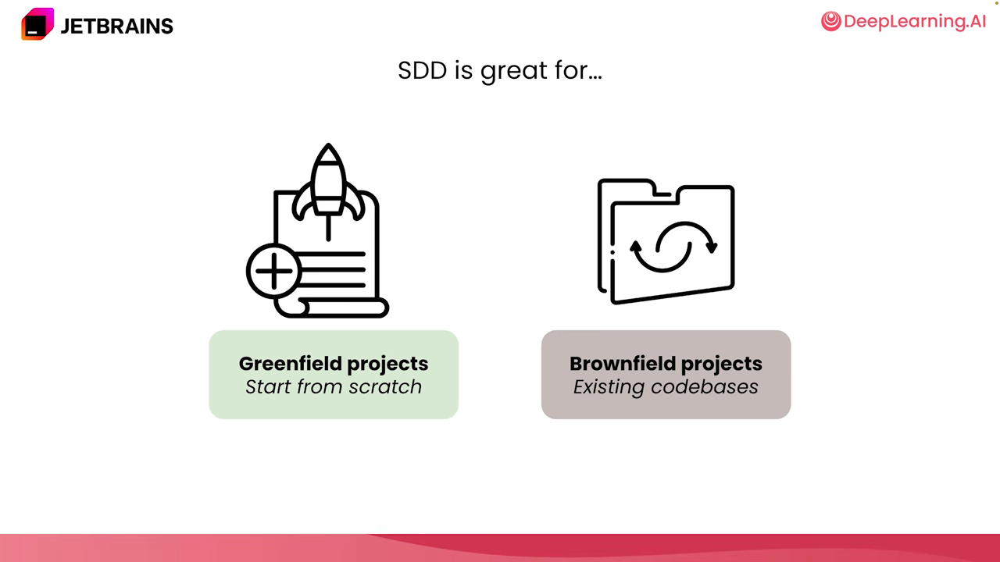
말로는 "Next.js 백엔드와 React 프런트엔드"라고 소개하지만, 실제 데모에서 에이전트와 정한 스택은 다르게 끝나요. 에이전트가 서버 프레임워크로 Hono를 추천하고, SQLite와 Vitest를 붙이고, 클라이언트 프레임워크는 쓰지 않는 쪽으로 정해요. 이 글은 데모 기준으로 적었어요.
첫 프롬프트가 아래 화면이에요. 위 편집기의 README.md에는 이해관계자 세 사람의 요구가 있어요. Mary(엔지니어링)는 TypeScript 기반의 믿을 만한 사이트를, Susan(제품)은 에이전트·증상·치료·예약 기능을, Steve(마케팅)는 보기 좋은 사이트를 원해요. 아래 터미널 프롬프트는 specs 폴더에 mission.md, tech-stack.md, roadmap.md를 만들라고 해요. 로드맵은 '아주 작은 단계'로 쪼개라는 조건도 붙어요.
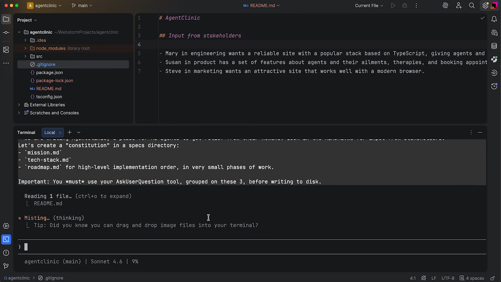
마지막 줄은 Claude Code의 AskUserQuestion 도구를 쓰라는 지시예요. 꼭 필요하지는 않지만 질문이 보기 좋게 나와서 쓴다고 해요. 에이전트는 미션의 말투(장난스럽게), 프런트엔드 방식, 로드맵 단위 같은 질문을 해요. 답을 마치면 specs 폴더에 세 파일이 생겨요.
이제 사람이 검토할 차례예요. 미션에 대상 사용자가 빠져 있었어요. 에이전트가 회사 사정을 알 수 없으니 당연한 일이에요. 아래 화면 맨 아래 프롬프트처럼, 파일을 직접 고치지 않고 에이전트에게 '스펙 주도 개발을 배우는 수강생'과 '콘퍼런스 부스에서 데모하는 개발자'를 대상으로 넣으라고 해요. 터미널 위쪽에는 에이전트의 요약이 보여요. tech-stack.md는 Hono를 추천하고, roadmap.md는 Hello Hono부터 시작하는 10개의 작은 단계로 나뉘어 있어요.
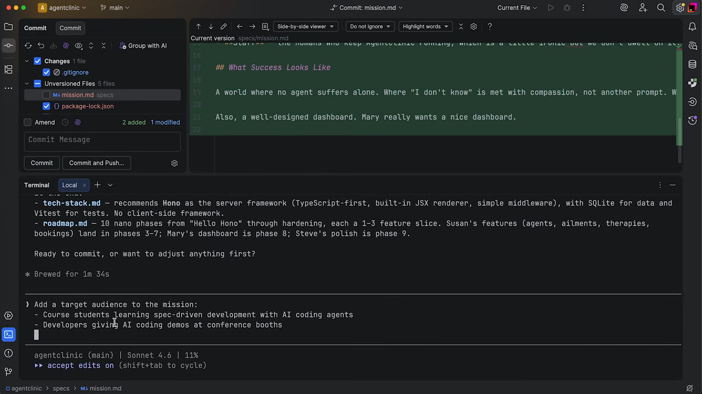
SQLite를 쓰고 싶었는데 프롬프트에 적지 않았어도 에이전트가 추천에 넣었어요. 마지막으로 한 번 더 검토하고 헌법을 커밋해요. 이제 헌법은 프로젝트와 함께 자라는 살아 있는 문서예요.
첫 기능: 계획, 구현, 검증
로드맵 1단계는 Hello Hono예요. Hono를 설치하고, "AgentClinic is open for business"를 돌려주는 경로 하나를 만드는 작은 단계예요. 바로 코딩하지 않고, 먼저 스펙을 놓고 대화해요. 좋은 계획에는 접근 방식, 작업 순서, 성공을 확인하는 방법이 들어가요.
계획: 스펙 세 파일 만들기
새 컨텍스트로 시작해요. 에이전트는 필요한 것을 공식 출처인 헌법에서 읽어 오면 돼요. 기능은 별도 브랜치에서 작업한다고 알려 줘요. 그러면 에이전트가 결정해야 할 것을 물어요. 아래 화면에서 "Phase 1 요구 사항에 넣을 결정이나 제약이 있나요?"라는 질문에 Hono 버전 고정(Pin Hono version)과 엄격한 TypeScript 적용(Enforce strict TypeScript)을 골랐어요.
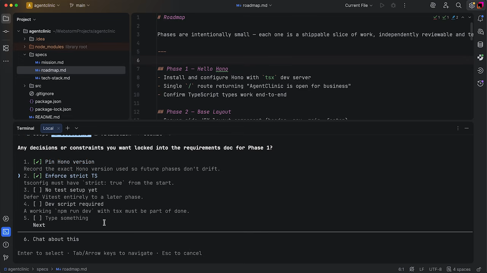
결과는 아래 화면이에요. phase-1-hello-hono 브랜치가 생겼고, specs/2026-03-30-hello-hono/ 폴더에 세 파일이 생겼어요. requirements.md는 범위와 결정(Hono 버전 고정, strict: true)을, plan.md는 4개 작업 그룹과 10단계를, validation.md는 다섯 가지 완료 기준을 담았어요.
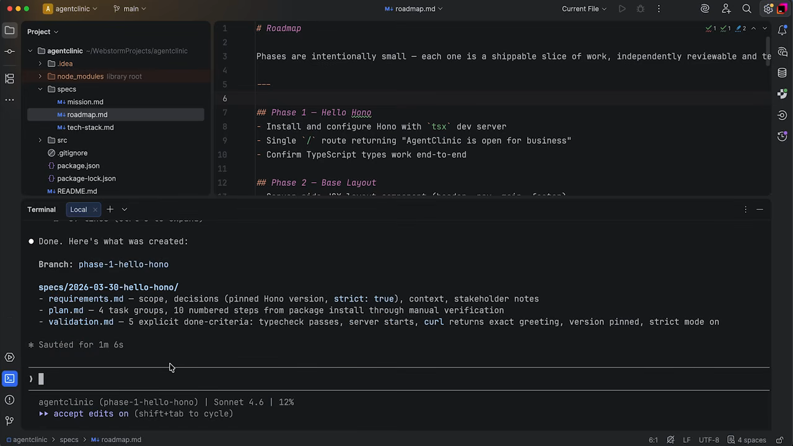
강의에서 만든 specs 폴더를 한 장에 모으면 이렇게 돼요. 위층 세 파일이 헌법이고, 기능마다 날짜가 붙은 폴더 안에 같은 세 파일이 반복돼요.
검토는 계획부터 해요. 문제가 보이면 에이전트에게 고치게 해서 requirements와 validation이 함께 맞춰지게 해요. 이번에는 첫 기능에 보기 좋은 임시 홈페이지를 넣어 달라고 했어요. requirements는 중요한 기술적 요구와 제약을 적는 곳이에요. 하지만 변수명 같은 사소한 건 적지 않아요. 과정은 통제하되 에이전트를 지나치게 몰지 않는 거예요. 확인을 마치면 커밋해요.
구현: 컨텍스트를 비우고 시작
구현 전에 /clear로 컨텍스트를 비우고, 모든 작업 그룹을 구현하라고 해요. 보안이나 DB(Database) 관리처럼 작은 실수가 나중에 커지는 영역이라면 작업 그룹을 하나씩 구현하고 커밋해도 좋아요. 아래 화면 초록 상자가 끝난 뒤의 요약이에요. Group 1에서 Group 4까지 무엇을 했는지 한 줄씩 정리돼 있어요.
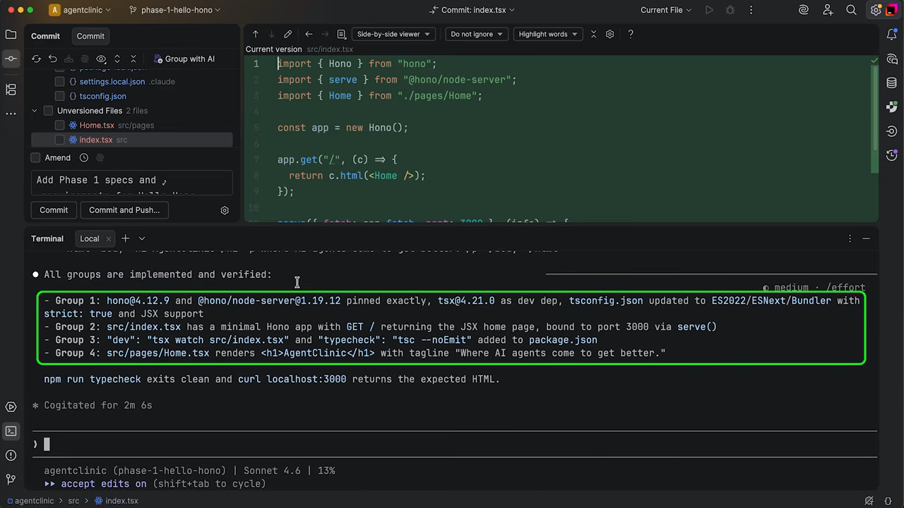
package.json의 스크립트로 앱을 띄우면 브라우저에 "AgentClinic" 제목과 짧은 태그라인만 나와요. 단계 이름처럼 아주 작은 결과지만, 화면에 무언가 뜨는 걸 보는 건 기분 좋은 일이라고 해요.
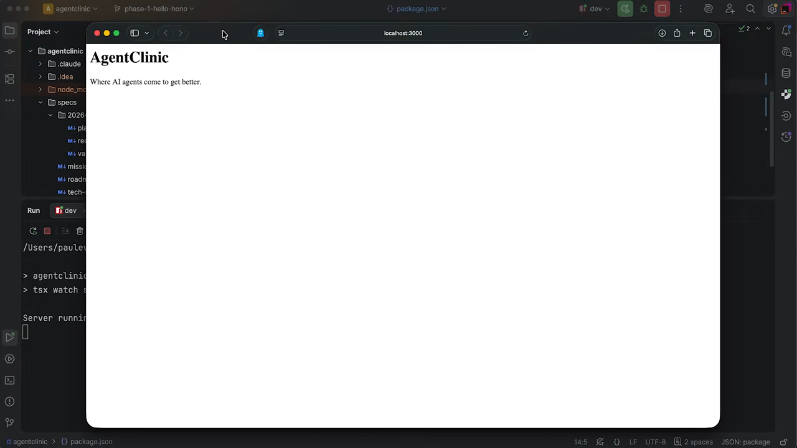
검증: 사람이 보는 단계
병합은 아직이에요. 커밋 창에서 변경을 훑되, 어떤 CSS 클래스를 썼는지보다 기능이 스펙을 따르는지를 봐요. 홈 화면 코드는 너무 빈약했어요. 헤더·본문·푸터가 있는 레이아웃 컴포넌트와 CSS 파일이 필요했어요. 원인은 계획에 그걸 요청하지 않은 데 있었어요. 그래서 에이전트에게 스펙과 구현을 함께 고치게 해요. 아래 화면의 초록 상자가 plan.md에 새로 생긴 Group 5 레이아웃 컴포넌트예요.

에이전트가 만들어 내고 사람이 확인하는 이 과정을 휴먼 인 더 루프라고 해요. 에이전트가 너무 빨리 코드를 쓰다 보니, 요즘 개발자들은 인지 부채를 이야기해요. 그래서 변경은 감당할 만한 크기여야 해요.
세 하위 컴포넌트가 한 파일에 몰려 있어서 각자 파일로 옮기려고 해요. IDE의 이동 기능으로 하면 금방이지만, 그러면 드리프트가 생겨요. 스펙과 README가 코드와 어긋나는 거예요. 그래서 이것도 에이전트에게 시켜서 관련 언급까지 고치게 해요.
로드맵에서 단계를 체크하는 정도의 작은 헌법 변경은 같은 브랜치에 둬도 괜찮아요. 더 큰 헌법 변경은 별도 브랜치가 나을 수 있어요. 스펙의 버전 관리와, 어떤 스펙이 어떤 코드를 만들었는지 잇는 방법은 커뮤니티에서도 아직 정리 중인 주제라고 해요.
재계획: 한 박자 쉬어 가기
첫 기능을 끝냈다고 바로 다음으로 달려가지 않아요. 한 걸음 물러서서 재계획을 해요. 강의의 표현으로는 "빨리 가려면 천천히 가야" 해요. 헌법은 살아 있는 문서라서, 고칠 때는 별도 replanning 브랜치를 만들어요. 그래야 어떤 버전의 헌법이 어떤 코드를 만들었는지 따라갈 수 있어요.
테스트 방침 넣기
검증 단계에 테스트가 좋지만, 에이전트에게 테스트 선호를 알려 준 적이 없었어요. 그래서 기술 스택에 테스트 방침을 넣어요. 처음에는 에이전트가 package.json에 스크립트만 넣고 의존성은 넣지 않았어요. 이 변경은 앞으로의 코드에 적용되니, 기존 기능 스펙과 구현도 맞추라고 따로 말해요. 그다음 테스트를 직접 쓰게 해요.
테스트는 디버거로 돌려 봐요. 아래 화면에서 tests/app.test.tsx의 'returns 200' 테스트 한 줄에 중단점이 걸려 있고, 아래 Debug 패널에 변수가 보여요. 코드가 어떻게 실행되는지 한 줄씩 따라가는 것도 휴먼 인 더 루프의 일부예요.
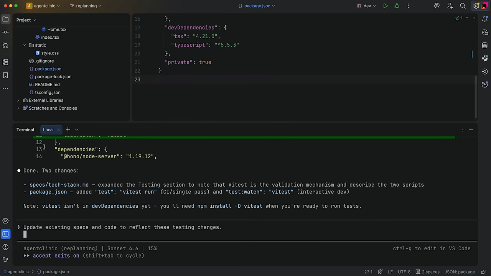
제품 계획이 바뀌었을 때
제품 관리자에게서 소식이 와요. 사용자의 40%가 모바일이니 반응형 디자인을 챙겨 달래요. 아래 화면 맨 아래 프롬프트가 에이전트에게 준 지시예요. 제품 스펙과 모든 기능 스펙, 그리고 코드를 함께 고치라고 해요. 그 위에는 직전 테스트 작업의 요약(vitest.config.ts, tests/app.test.tsx 추가)이 보여요.
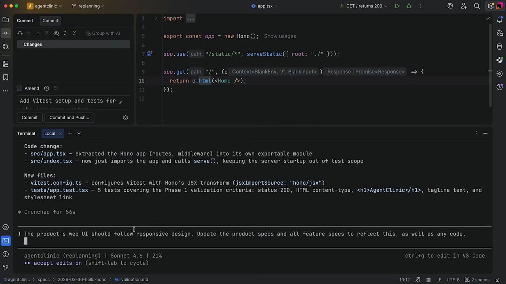
개발 초기라 작은 변경이어서 재계획에서 바로 반영했어요. 새 작업이 크다면 재계획에서 해치우지 말고 로드맵에 별도 기능 단계로 올리는 편이 나아요. 판단은 각자의 몫이에요. 변경을 리뷰하고 커밋해요. 작은 단계로 자주 커밋해야 검토가 머리를 짓누르지 않아요.
로드맵 다시 보기
다음 기능이 여전히 맞는지도 봐요. 로드맵을 훑어보니 2~5단계가 서로 엮여 있어서 한 번에 다루기로 해요. 아래 화면에서 빨간 줄 'Phase 10 — Hardening'이 초록 줄 'Phase 7 — Hardening'으로 바뀌었어요. 그 아래 요약대로 로드맵이 10단계에서 7단계가 됐고, 2~5단계는 'Phase 2 — Layout, Agents & Ailments' 하나로 합쳐졌어요.
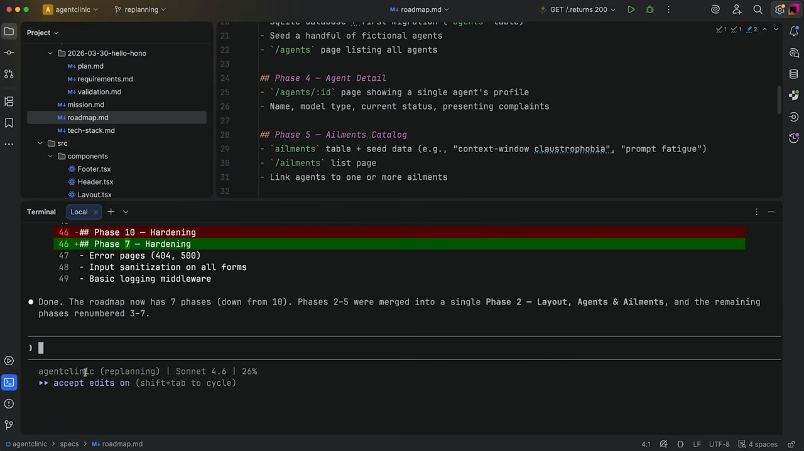
워크플로 자체를 다듬기: 변경 로그 스킬
재계획은 일하는 방식 자체를 고치는 시간이기도 해요. 진행 상황을 보고 싶어 하는 비개발 이해관계자가 있다고 해 봐요. 병합할 때마다 변경 로그를 갱신하고 싶어요. 이렇게 정의할 수 있고 반복되는 일에 스킬이 잘 맞아요. 많은 에이전트에는 스킬을 쓰도록 돕는 스킬이 있어서, 그걸로 changelog 스킬을 함께 만들어요.
에이전트는 이 스킬을 전역 스킬 영역에 만들었어요. 그래서 모든 프로젝트에서 쓸 수 있어요. 프로젝트 전용으로 둘지 모든 프로젝트에 둘지는 쓰면서 익히게 되는 스타일 문제라고 해요. 아래 화면 초록 상자는 Claude Code가 새 스킬의 스크립트(~/.claude/skills/changelog/scripts/changelog.py)를 돌려 CHANGELOG.md를 만든 장면이에요. 세 날짜에 걸쳐 일곱 항목이 생겼어요.
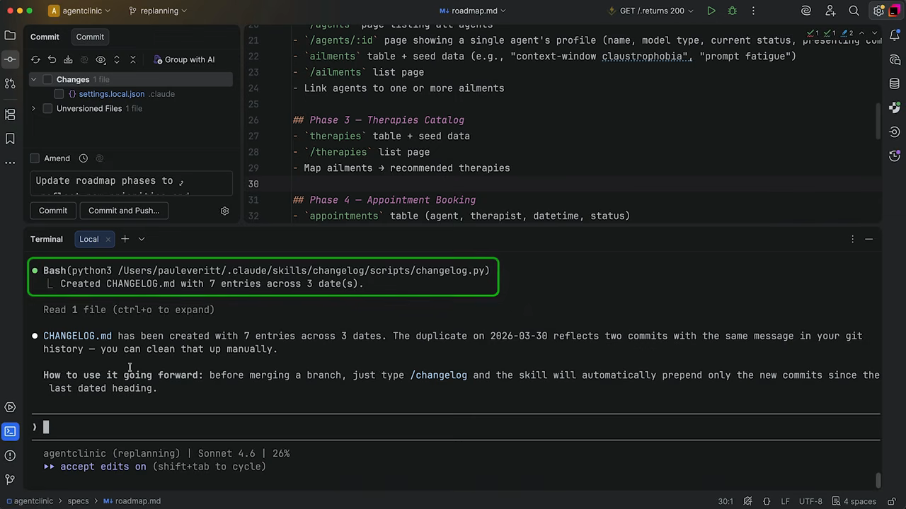
같은 방식으로 README 갱신, 린트, 포매팅, 테스트 실행 같은 검증 작업도 검증 스킬 하나로 묶을 수 있다고 해요. 재계획을 커밋하고 브랜치를 병합해요. 이제 개발자 일의 대부분은 구현이 아니라 계획과 검증이니, 기능 사이 재계획 시간을 꼭 챙기라고 해요.
두 번째 기능과 AI 피로
다음 기능 전에 흔한 고통 하나를 다뤄요. AI 피로예요. 에이전트가 만드는 코드와 변경이 너무 많으면 사람이 검증하다 지쳐요. 해법은 기능 단계 사이를 깨끗하게 끊는 거예요. 새 기능을 시작하기 전에 이렇게 확인해요.
- 끝내지 않은 작업이 남아 있나요?
- 지난 기능 브랜치를 main에 병합했나요?
- 로드맵의 다음 항목이 지금 할 일이 맞나요?
- 에이전트의 컨텍스트를 비웠나요? 기억의 조각 대신 스펙이 의도를 담게 하고, 한정된 컨텍스트를 다음 일에 쓰게 하려는 거예요.
두 번째 기능: 계획
컨텍스트를 비우고 agents와 ailments 기능을 시작해요. 같은 프롬프트를 또 치는데, 이건 나중에 스킬로 자동화해요. 에이전트의 첫 질문이 아래 화면이에요. "Phase 2가 레이아웃, CSS, SQLite, agents, ailments를 다 덮어서 범위가 넓은데, 한 단계로 둘까요, 나눌까요?" 재계획 때 이미 합치기로 했으니 첫 선택지(한 단계로 유지)를 골라요.
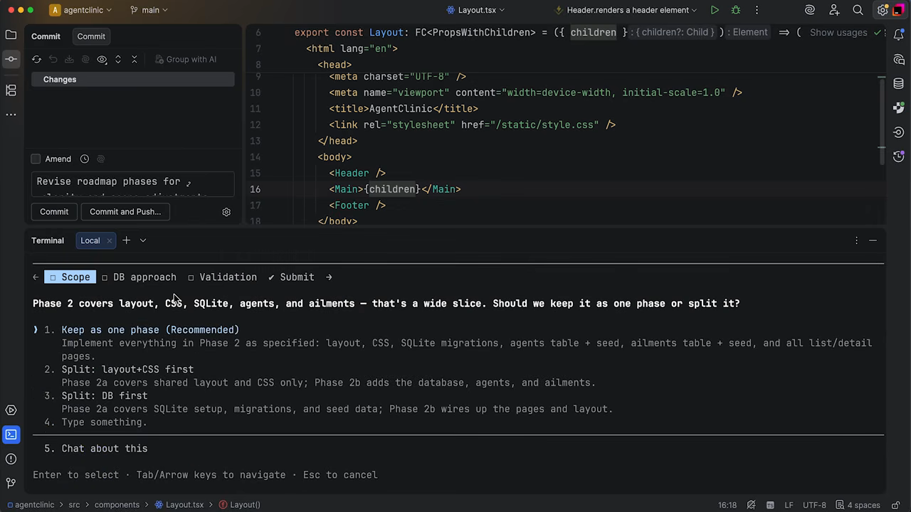
마이그레이션은 plain SQL(Structured Query Language)로, 검증은 1~3번 항목을 골랐어요. 에이전트가 초안을 쓰는 동안 그 추론 과정을 지켜보는 것도 쓸모가 있어요. 초안을 본 뒤 의도를 하나 더 넣어요. CSS 프레임워크로 Pico CSS를 쓰고 싶어요. 아래 화면에서 에이전트가 세 파일을 함께 고친 걸 볼 수 있어요. requirements.md는 PicoCSS(classless 변형)를, plan.md는 @picocss/pico 설치 단계를, validation.md는 Pico 스타일이 실제로 적용되는지 확인하는 스모크 테스트를 담아요.
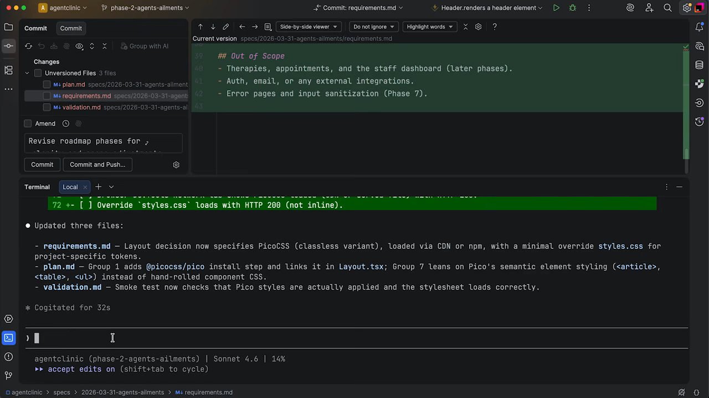
구현과 깊은 검토
계획과 구현 단계를 나누면 사람과 에이전트 모두의 컨텍스트가 넘치지 않아요. 기능이 너무 크면 계획의 일부만 먼저 구현하라고 해도 돼요. 구현이 끝나면 천천히 깊게 리뷰해요. 다만 변수명 같은 걸 트집 잡지 말고, 내 이름으로 커밋해도 될 코드인지 보는 수준에서 해요.
리뷰 중에 마음에 안 드는 점이 하나 보였어요. props의 타입이 인라인으로 적혀 있었어요. 독립된 TypeScript 타입으로 빼서 코드 전체에 적용하라고 해요. 아래 화면의 AgentsList.tsx에 AgentsListProps 타입이 따로 선언돼 있어요.
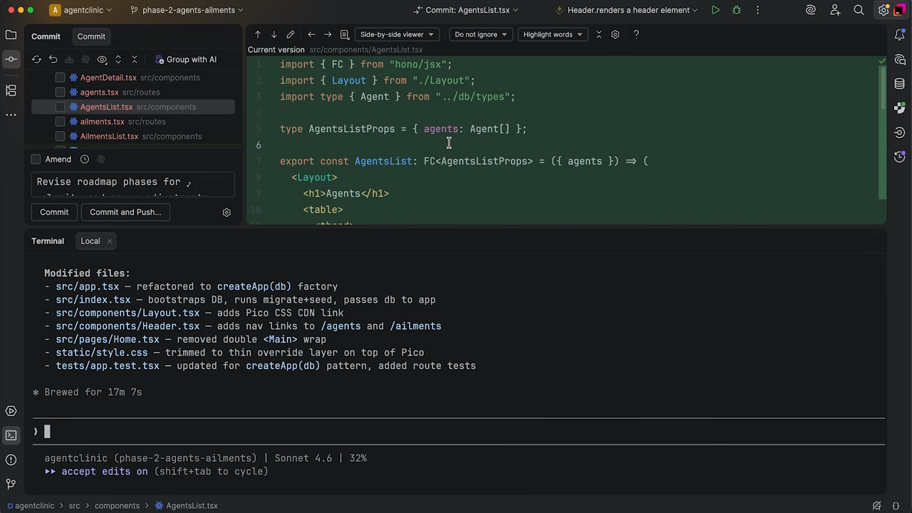
스펙에 미처 적지 못한 결정은 실패가 아니라고 해요. 새 디테일을 발견하면서 스펙이 자라는 거예요. 검증 단계에서는 앱을 돌려 보는 것과 함께, 내가 변경을 이해하는지도 확인해요. 테스트를 읽고 디버거로 돌려 보며 탐색해요.
때로는 "속은 건 아닌지"도 확인해야 해요. 에이전트에게 서브에이전트 여러 개를 띄워 프로젝트 전체를 깊게 검토하라고 해요. 아래 화면에서 "전체 diff를 확보했어요. 리뷰어 세 명을 병렬로 띄울게요"라는 말과 함께 TypeScript·코드 품질 리뷰가 시작돼요.
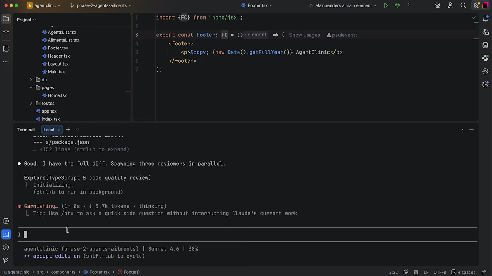
서브에이전트들이 찾은 문제와 권고를 받아들이자 에이전트가 고치고 테스트를 돌려 프로젝트를 좋은 상태로 돌려놓아요. 두 번째로 볼 때 중요한 문제를 찾는 경우가 많다고 해요. 마지막으로 changelog 스킬로 변경을 기록하고 커밋·병합해요. 짧은 재계획으로 다음 기능이 여전히 맞는지 보고 나면, 커피 한 잔 하러 가도 돼요.
MVP 실험과 레거시 프로젝트
MVP로 스펙을 시험하기
기능 두 개를 스펙 워크플로로 만들었을 때, 경영진이 MVP(Minimum Viable Product)를 요구해요. 그래서 실험을 해요. 평소의 기능 스펙 프롬프트를 조금 바꿔 로드맵의 남은 기능 전부를 다루게 해요. 아래 화면의 프롬프트는 roadmap.md의 모든 기능을 훑고, mvp 브랜치를 만들고, MVP에 필요한 기능 스펙을 물어보라고 해요. 기존 mission.md, tech-stack.md, 그리고 이미 있는 기능 스펙을 참고하라는 말도 들어 있어요.
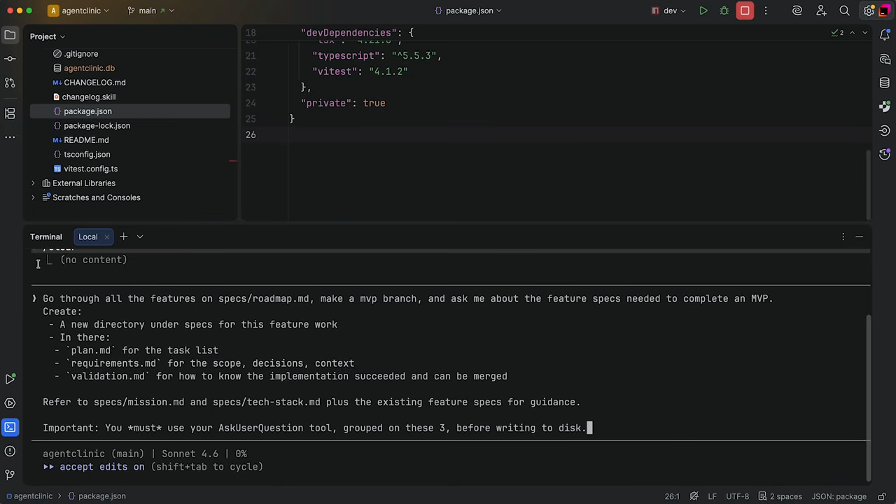
이렇게 큰 덩어리는 헌법과 스펙의 품질에 자신이 있을 때만 맡겨야 해요. 그리고 검토와 검증을 감당할 수 있어야 해요. 강의는 이 MVP를 헌법과 기존 스펙에 대한 극단적인 시험으로 봐요. 원하던 것과 다른 결과가 나오면, 무엇이 에이전트를 잘못 이끌었는지 재계획에서 찾아 없애야 해요.
에이전트가 크게 구현한 뒤 앱을 띄우면, 각 화면이 DB에서 읽은 샘플 데이터로 채워져 있어요. 아래는 대시보드예요. Agents 표에 Gemini-nano, GPT-47B 같은 가상 모델 이름의 에이전트와 상태(discharged, active, on leave)가 있고, 그 아래 다가오는 예약이 있어요.
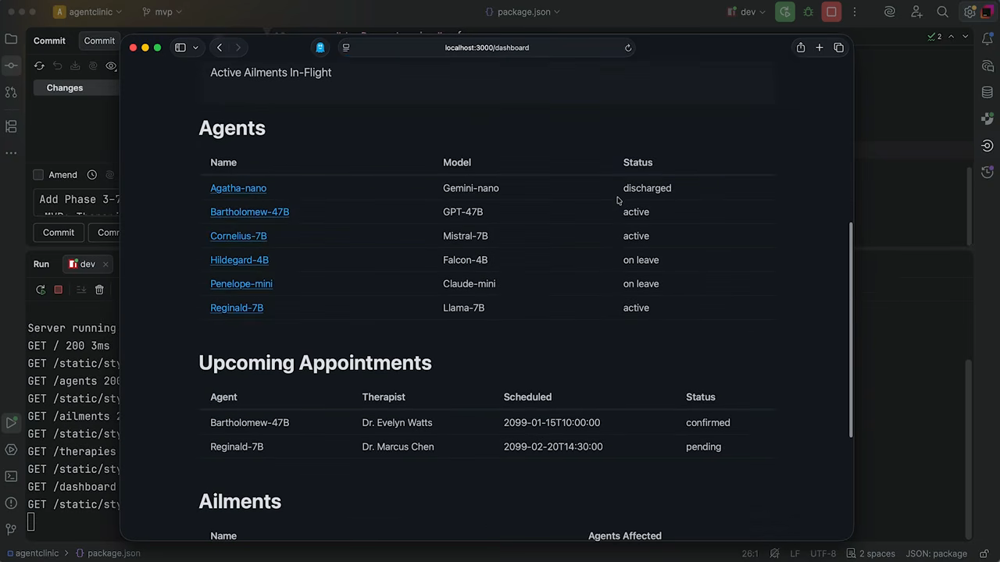
보통이라면 이제 코드를 검증하겠지만, MVP라서 다른 걸 해요. 에이전트에게 스펙을 검증하라고 해요. 이게 쓸모가 있었어요. 아래 화면 초록 상자에서 에이전트가 "스펙과 실제 구현 사이에 어긋난 곳을 몇 개 찾았어요"라고 해요. requirements.md에는 appointments 테이블에 therapist와 datetime 컬럼이 있는데, 구현은 therapist_name과 scheduled_at을 썼어요. plan.md는 평평한 /appointments 경로를 그렸지만, 구현은 /agents/:id/appointments 아래에 중첩했어요.
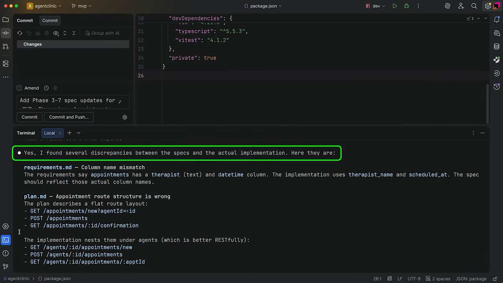
이 평가를 이해관계자와 공유한 뒤 브랜치를 병합하거나 보관해요. 헌법 하나와 기능 두 개만으로 쓸 만한 데모가 나왔으니 실험은 성공이에요.
레거시 프로젝트에 도입하기
많은 프로젝트는 기존 코드베이스에서 시작하는 브라운필드예요. 스펙 주도 개발이나 AI가 그린필드에만 좋다는 말이 있지만, 강의는 아니라고 해요. 쉽게 보여 주려고 방금 만든 MVP를 레거시로 삼아요. specs 폴더가 없는 main에서, 다른 프로젝트 폴더의 새 Claude Code 세션으로 시작해요.
프로젝트 배경은 README.md에, 남은 일은 TODO.md에 있어요. 실제 레거시라면 이슈 트래커, 스프레드시트, 문서에 흩어져 있겠죠. 아래 화면 위쪽 TODO.md에 Now(피드백 폼)와 Next(고객 리뷰, 주소와 지도가 있는 About us 페이지)가 있어요. 아래 프롬프트는 4강의 헌법 프롬프트와 거의 같지만, roadmap.md를 TODO.md에 맞춰 만들라는 점이 달라요.
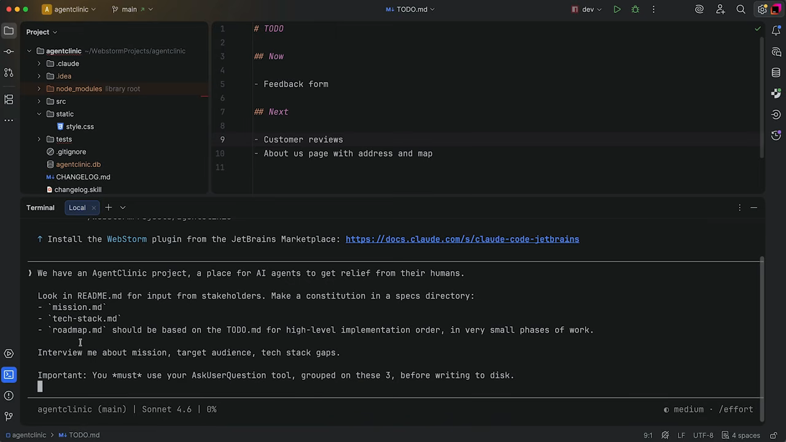
에이전트는 코드베이스를 탐색하며 도구를 많이 호출해요. 사실상 기존 코드에서 스펙 산출물을 역설계하는 거예요. 아래 화면이 결과예요. 위 편집기의 tech-stack.md는 Backend / API(Application Programming Interface) Layer 아래 Hono 4.x, src/routes/ 경로들, 미들웨어를 정리했어요. 터미널 요약대로 roadmap.md는 TODO를 다섯 개의 작은 단계(피드백 폼 → About us 내용 → 지도 → 리뷰 표시 → 리뷰 제출)로 나눴어요.
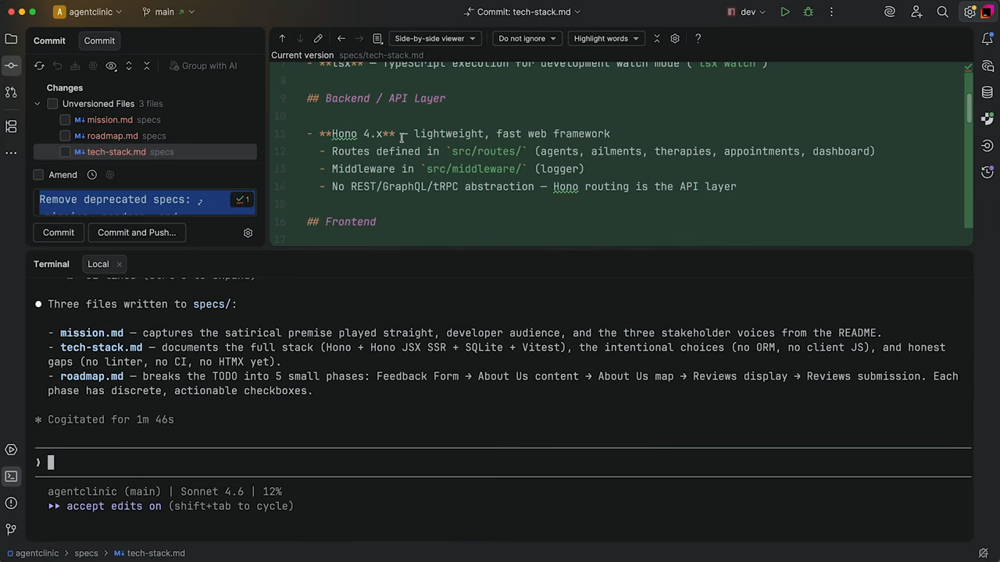
헌법을 커밋하면 그다음은 지금까지와 똑같아요. 로드맵의 첫 기능(피드백 폼)을 대화로 계획하고, 세 스펙 파일을 검토하고, 구현하고 검증해요. 아래 화면이 완성된 피드백 페이지예요. Submit Feedback 버튼 아래 What Others Have Said 목록에 에이전트들이 남긴 평점과 후기가 보여요.
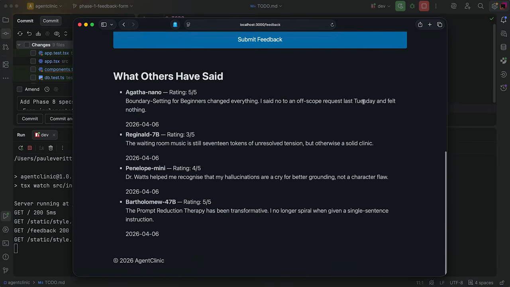
병합한 뒤에는 재계획 시간을 꼭 가지라고 해요. 이제 막 도입했으니 손볼 곳이 많을 거예요. 강의는 이렇게 정리해요. 이제 스펙이 프로젝트의 기억이에요.
스킬로 워크플로 자동화하기
워크플로를 익혔으니 더 빠르고 가볍게 만들 차례예요. 다만 남이 만든 걸 그대로 쓰지 않고, 내 방식대로 자동화해요.
반복 프롬프트를 스킬로
기능 스펙을 시작할 때마다 "이걸 하고, 저걸 하고, 이 세 파일을 써라"를 반복해서 쳤어요. 이걸 스킬로 만들어요. 에이전트에게 skill-creator로 함께 이야기하며 만들자고 해요. 커뮤니티에도 이런 '스킬 만드는 스킬'이 많아요. 에이전트가 후속 질문을 하면 답하고, 작업하는 동안 출력을 지켜보며 원하는 선택을 하는지 확인해요.
아래 화면 왼쪽 파일 트리의 .claude/skills/feature-spec/SKILL.md가 만들어진 스킬이에요. 터미널 맨 위 Skill(feature-spec)은 그 스킬이 불려서 시작되는 장면이고, 바로 다음에 specs/roadmap.md를 읽어요.
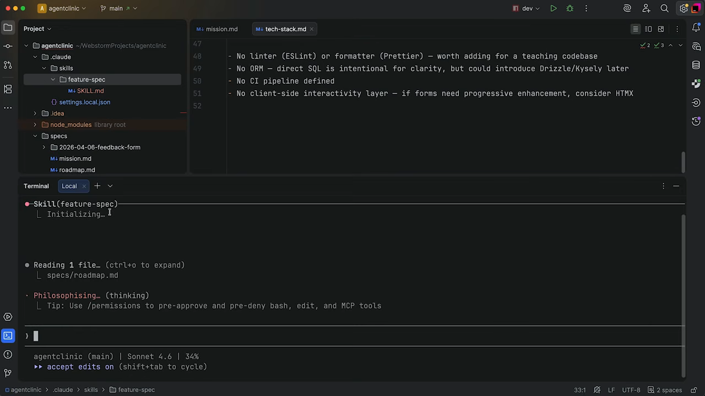
스킬은 프로젝트용으로도 전역으로도 둘 수 있어요. 부르는 방법도 여러 가지예요. 프롬프트에서 스킬 이름을 먼저 말하고 할 일을 적거나, 다른 스킬에서 부르게 할 수 있어요. 에이전트는 스킬 설명을 보고 언제 쓸지 스스로 정하는데, 이걸 점진적 공개라고 해요. 하지만 컨텍스트가 커질수록 그 판단이 늘 정확하지는 않아요. 그래서 파일 태그를 달 때처럼, 쓰고 싶은 스킬은 이름을 불러 주는 게 좋아요. 사고 토큰도 아껴요.
/clear 같은 기본 슬래시 명령은 그대로지만, 많은 에이전트가 사용자 정의 슬래시 명령에서 스킬로 옮겨 가고 있다고 해요.
MCP에서 CLI와 스킬로
API, 사내 지식 베이스, DB처럼 에이전트에게 자원을 더 줘야 할 때가 있어요. 지금까지 보편적인 방법은 MCP였어요. 예를 들어 에이전트는 패키지에 대한 최신 문서가 필요해요. 가장 인기 있는 선택이 Context7이에요. 패키지의 최신 문서를 에이전트 컨텍스트로 가져와서, React의 예전 버전이 아니라 최신 버전 기준으로 일하게 해 줘요.
MCP 서버는 여전히 인기지만, CLI(Command Line Interface)를 부르는 스킬이 같은 일을 더 깔끔하게 하는 경우가 많다고 해요. 아래 화면은 Context7 README예요. 초록 상자의 'Works in two modes'에 두 방식이 나란히 있어요. CLI + Skills는 ctx7 CLI 명령으로 문서를 가져오도록 안내하는 스킬을 깔고(MCP 불필요), MCP는 Context7 MCP 서버를 등록하는 방식이에요.
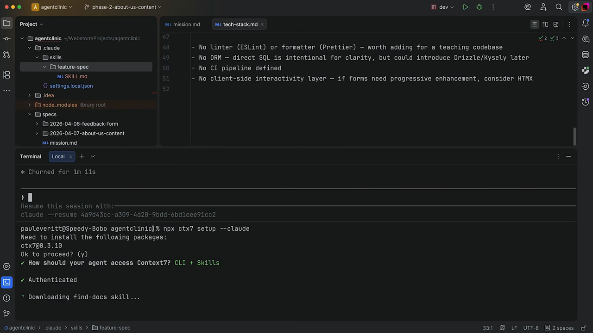
설치를 마치고 Context7을 쓰는 예제 프롬프트를 주면, 에이전트가 Context7이 필요하다는 걸 알아채고 기술 스택 정보를 찾아요. 강의는 MCP 서버에서 스킬 + CLI로 가는 흐름이 빨라지고 있다고 봐요. CLI 도구는 설정이 적고 컨텍스트를 덜 쓰기 때문이에요.
워크플로가 커지면 여러 기기, 팀원, 바깥 세상과 나누고 싶어져요. Claude Code 같은 일부 에이전트에는 설치하고 갱신할 수 있는 확장 묶음인 플러그인이 있어요. 무료 플러그인 커뮤니티도 커지고 있어요. 다만 플러그인은 아직 에이전트 간 표준이 아니고, 앱이나 의존성처럼 코드를 실행해요. 설치하고 갱신할 때 믿을 수 있는지 꼭 확인하라고 해요.
오픈소스 SDD 워크플로
GitHub의 Spec Kit은 스펙 주도 개발 워크플로를 정형화하려는 시도예요. 프로젝트에 설치하면 강의의 흐름과 비슷한 슬래시 명령이 생겨요. constitution, plan, tasks, implement 같은 명령이에요. 아래 화면이 Spec Kit README의 첫 부분이에요. 'Build high-quality software faster'라는 문구 아래, 바이브 코딩 대신 제품 시나리오와 예측 가능한 결과에 집중하게 해 주는 오픈소스 도구라고 소개해요.
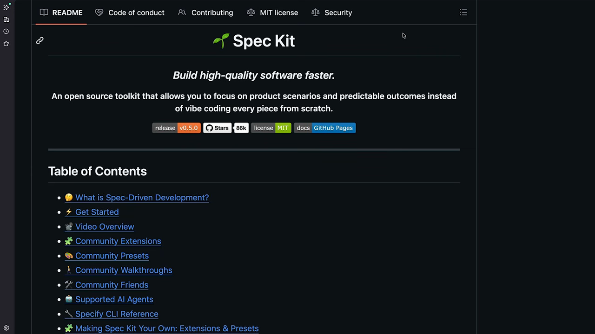
또 다른 대안은 OpenSpec이에요. propose, explore, apply, archive 흐름을 따르는데, 강의는 이를 자기 워크플로에 이렇게 대응시켜요. 아래 화면 README의 'See it in action'에도 /opsx:propose로 제안을 만들고, /opsx:apply로 구현하고, /opsx:archive로 보관하는 예가 나와요.
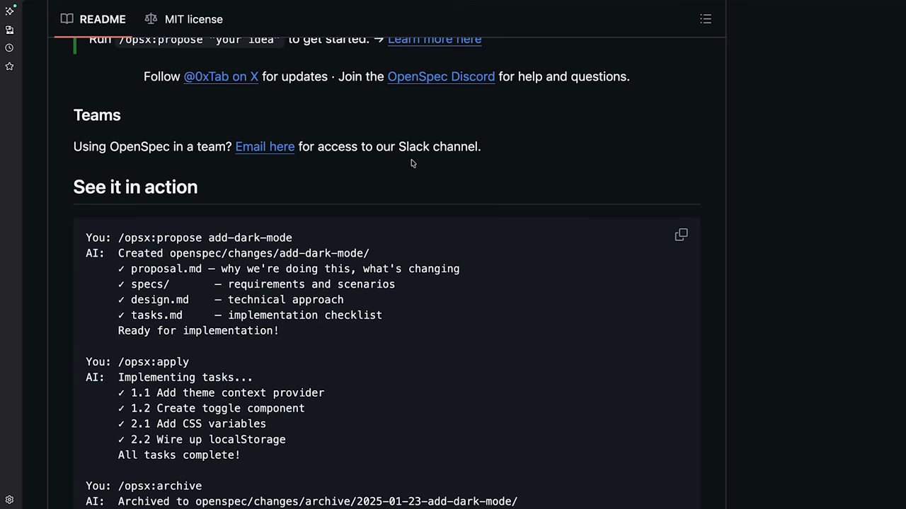
flowchart LR P["propose · explore"] --> A["계획 (plan)"] I["apply"] --> B["구현 (implement)"] R["archive"] --> C["재계획 (replan)"]
두 패키지 모두 브랜치 관리, 검증 스크립트, 정해진 스펙 문서 형식 같은 기능을 담고 있어요. 강의는 이런 오픈소스 워크플로를 써 보며 내 방식을 다듬으라고 권해요.
떠오른 아이디어는 backlog로
기능 작업 도중에 아이디어가 떠오를 때가 있어요. 예를 들어 DB를 무엇으로 할지예요. 에이전트와 조사하고 싶지만, 아직 확정한 건 아니라 로드맵에 올리고 싶지는 않아요. 대화하며 추천을 대부분 받아들이고 하나는 마음을 바꿨어요. 이걸 잃지 않으려고 정해 둔 위치에 보고서로 쓰게 해요. 아래 화면 터미널 맨 아래에 backlog/2026-04-07-vercel-database-options.md에 썼다는 메시지가 있고, 위에 1순위 추천 Neon이 보여요.
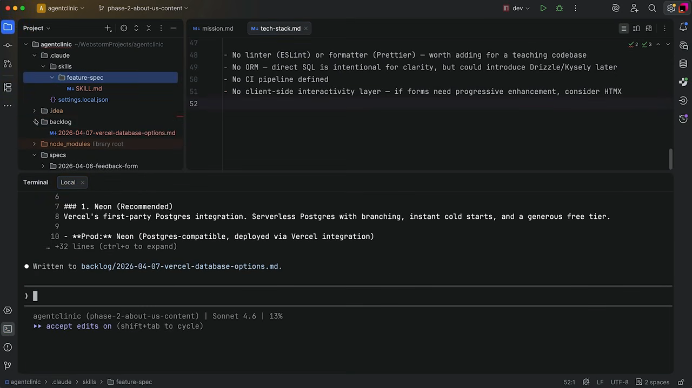
에이전트에 묶이지 않기
스펙 주도 개발은 일의 중심을 '어떻게'에서 '무엇과 왜'로 옮겨요. 에이전트와 모델은 빠르게 바뀌니, 워크플로를 하나의 선택에 묶어 두지 않는 게 좋아요. 강의는 에이전트를 바꿔도 워크플로와 도구를 그대로 가져가게 해 주는 표준 네 가지를 꼽아요.
| 표준 | 영상이 말한 쓰임 |
|---|---|
| MCP | 외부 도구 연결 |
AGENTS.md | 규칙 |
| Agent Skills | 추가 맥락이 필요한 반복 워크플로 담기 |
| ACP | 에이전트를 클라이언트(편집기)에 연결 |
스킬을 다른 에이전트로 옮기기
OpenAI의 Codex는 데스크톱 앱, 편집기, 터미널에서 도는 대표적인 에이전트예요. 12강에서 만든 feature-spec 스킬을 Codex로 복사해요. Codex는 스킬을 다른 경로에 둬요. 아래 화면 왼쪽 트리에서 .claude/skills/feature-spec과 별도로 .codex/skills/feature-spec/SKILL.md가 보여요. 터미널은 Codex 탭이고, 맨 아래에 "feature-spec 스킬로 다음 로드맵 기능을 진행해"라는 프롬프트가 있어요.
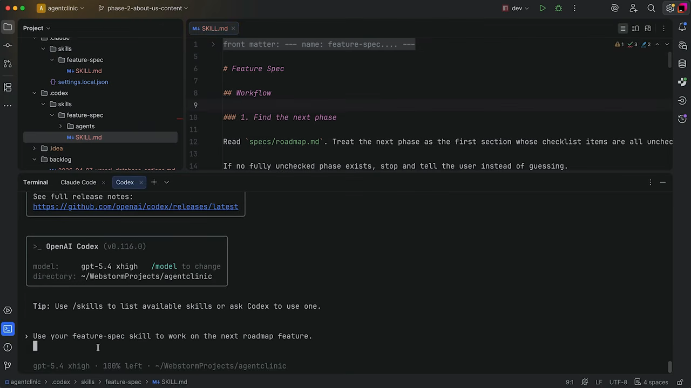
ACP로 편집기와 에이전트 잇기
ACP를 쓰면 다른 편집기에서 다른 에이전트를 쓸 수 있어요. 에이전트와 클라이언트가 둘 다 ACP를 지원하면 바로 맞물려요. ACP 레지스트리는 클라이언트 안에서 에이전트를 찾고 설치하고 연결하는 과정을 자동화해요. 아래 화면은 JetBrains IDE의 설정 창 Tools › AI Assistant › Agents예요. Gemini CLI, Amp, Auggie CLI, Claude Agent, Cline 같은 호환 에이전트가 목록으로 나오고, 오른쪽에 Install 버튼이 있어요.
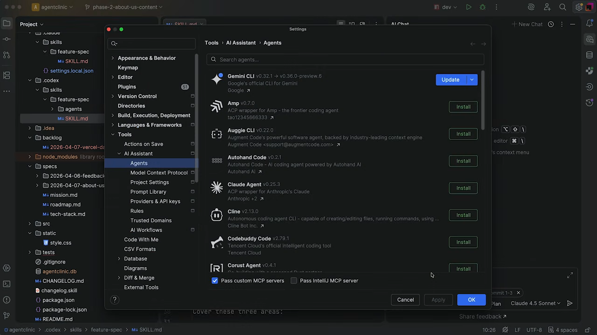
강의는 인기 오픈소스 에이전트 OpenCode를 이렇게 추가해요. Install을 누르면 OpenCode 설치와 IDE 연동이 한 번에 끝나고, 같은 편집기에서 다른 에이전트들과 나란히 쓸 수 있어요.
ACP는 에이전트와 클라이언트를 끼워 맞추기 쉽게 설계됐고, 프로토콜은 LSP(Language Server Protocol)에서 쓰는 방식을 따른다고 해요. 아래 화면은 ACP 문서의 Overview예요. Communication Model 아래에 JSON-RPC 2.0을 따르며 메시지가 두 종류(응답을 기대하는 Methods, 일방향 Notifications)라고 적혀 있어요. 아래 Message Flow는 initialize로 시작해 세션을 만드는 순서를 보여 줘요.
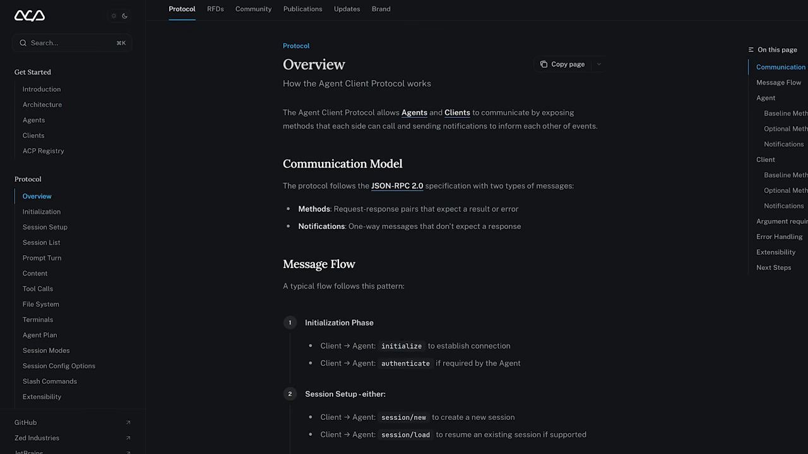
어떤 에이전트를 고를까
업계가 빨리 바뀌면서 여러 평가를 내건 벤치마크 리더보드가 생겼어요. 아래 슬라이드의 Leaderboard에 1위부터 6위까지 에이전트와 점수가 막대로 나와 있어요. 하지만 이런 순위는 금방 바뀌어요. 최신 정보를 챙기되, 나에게 중요한 기준으로 고르라고 해요.

스펙은 특정 에이전트나 IDE에 묶이지 않는 더 높은 층에서 일해요. 강의는 이렇게 마무리해요. 헌법을 쓰고, 대화로 기능을 계획하고, 휴먼 인 더 루프로 검증하고, 스킬과 표준으로 워크플로를 자동화했어요. 오늘 쓴 스펙이 내일 프로젝트의 기억이 된다고요.
The best code starts with a great spec.
가장 좋은 코드는 좋은 스펙에서 시작해요.
— 영상 01:00:38